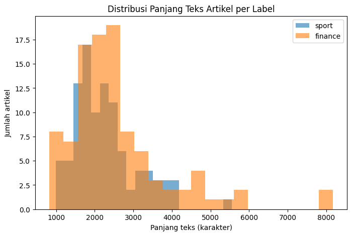
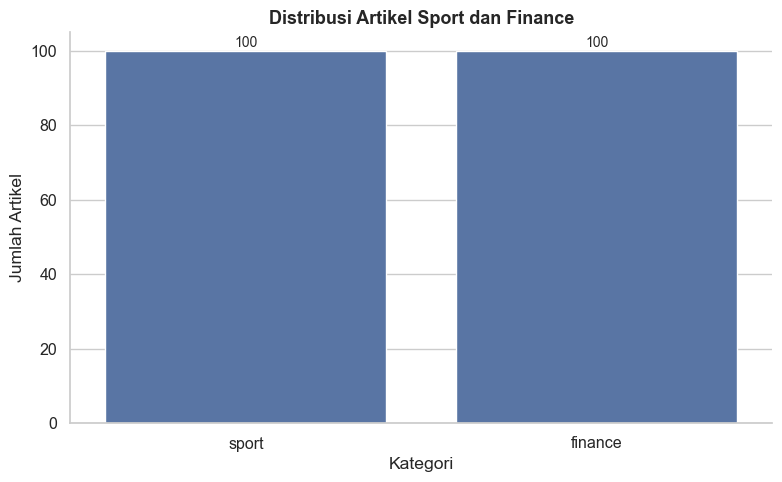
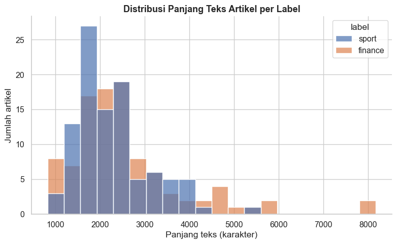

Data Understanding#
Tahap ini melakukan eksplorasi awal (EDA) terhadap dataset 200 artikel berita yang telah dikumpulkan pada tahap Business Understanding, untuk memastikan data siap digunakan pada tahap selanjutnya (Data Preparation & Modeling).
import pandas as pd
df = pd.read_excel("../data/dataset_berita_200.xlsx")
print("Ukuran dataset:", df.shape)
df.head()
Ukuran dataset: (200, 4)
| id | isi_berita | label | url | |
|---|---|---|---|---|
| 0 | 1 | Chef de Mission (CdM) Indonesia Todotua Pasari... | sport | https://sport.detik.com/sport-lain/d-8655308/c... |
| 1 | 2 | Banjir besar melanda Nagoya, Jepang, menjelang... | sport | https://sport.detik.com/sport-lain/d-8655303/a... |
| 2 | 3 | Ketua Umum Komite Olimpiade Indonesia (KOI) Ra... | sport | https://sport.detik.com/sport-lain/d-8655067/k... |
| 3 | 4 | Persaingan titel juara dunia semakin ketat men... | sport | https://sport.detik.com/moto-gp/d-8654776/moto... |
| 4 | 5 | Sektor ganda campuran kembali mengalami peromb... | sport | https://sport.detik.com/raket/d-8654666/ganda-... |
print("Info dataset:")
df.info()
print("\nDistribusi label:")
print(df["label"].value_counts())
print("\nCek nilai kosong:")
print(df.isnull().sum())
print("\nCek duplikat isi_berita:")
print(df["isi_berita"].duplicated().sum())
Info dataset:
<class 'pandas.core.frame.DataFrame'>
RangeIndex: 200 entries, 0 to 199
Data columns (total 4 columns):
# Column Non-Null Count Dtype
--- ------ -------------- -----
0 id 200 non-null int64
1 isi_berita 200 non-null object
2 label 200 non-null object
3 url 200 non-null object
dtypes: int64(1), object(3)
memory usage: 6.4+ KB
Distribusi label:
label
sport 100
finance 100
Name: count, dtype: int64
Cek nilai kosong:
id 0
isi_berita 0
label 0
url 0
dtype: int64
Cek duplikat isi_berita:
0
df["panjang_teks"] = df["isi_berita"].apply(len)
print("Statistik panjang teks (karakter):")
print(df.groupby("label")["panjang_teks"].describe())
Statistik panjang teks (karakter):
count mean std min 25% 50% 75% max
label
finance 100.0 2596.74 1327.979308 826.0 1874.5 2291.0 2863.75 8169.0
sport 100.0 2274.33 812.942343 996.0 1704.0 2131.5 2630.50 5554.0
import sys
!{sys.executable} -m pip install matplotlib
Collecting matplotlib
Downloading matplotlib-3.10.9-cp310-cp310-win_amd64.whl (8.2 MB)
---------------------------------------- 8.2/8.2 MB 4.9 MB/s eta 0:00:00
Requirement already satisfied: numpy>=1.23 in c:\alisha\ppw\enwebmining\lib\site-packages (from matplotlib) (2.2.6)
Collecting pillow>=8
Downloading pillow-12.3.0-cp310-cp310-win_amd64.whl (7.2 MB)
---------------------------------------- 7.2/7.2 MB 4.0 MB/s eta 0:00:00
Collecting kiwisolver>=1.3.1
Downloading kiwisolver-1.5.1-cp310-cp310-win_amd64.whl (70 kB)
---------------------------------------- 70.6/70.6 kB 1.3 MB/s eta 0:00:00
Requirement already satisfied: packaging>=20.0 in c:\alisha\ppw\enwebmining\lib\site-packages (from matplotlib) (26.3)
Collecting pyparsing>=3
Downloading pyparsing-3.3.2-py3-none-any.whl (122 kB)
-------------------------------------- 122.8/122.8 kB 3.6 MB/s eta 0:00:00
Requirement already satisfied: python-dateutil>=2.7 in c:\alisha\ppw\enwebmining\lib\site-packages (from matplotlib) (2.9.0.post0)
Collecting contourpy>=1.0.1
Downloading contourpy-1.3.2-cp310-cp310-win_amd64.whl (221 kB)
-------------------------------------- 221.2/221.2 kB 4.5 MB/s eta 0:00:00
Collecting fonttools>=4.22.0
Downloading fonttools-4.64.0-cp310-cp310-win_amd64.whl (1.6 MB)
---------------------------------------- 1.6/1.6 MB 5.8 MB/s eta 0:00:00
Collecting cycler>=0.10
Downloading cycler-0.12.1-py3-none-any.whl (8.3 kB)
Requirement already satisfied: six>=1.5 in c:\alisha\ppw\enwebmining\lib\site-packages (from python-dateutil>=2.7->matplotlib) (1.17.0)
Installing collected packages: pyparsing, pillow, kiwisolver, fonttools, cycler, contourpy, matplotlib
Successfully installed contourpy-1.3.2 cycler-0.12.1 fonttools-4.64.0 kiwisolver-1.5.1 matplotlib-3.10.9 pillow-12.3.0 pyparsing-3.3.2
[notice] A new release of pip available: 22.2.1 -> 26.2.1
[notice] To update, run: python.exe -m pip install --upgrade pip
import matplotlib.pyplot as plt
fig, ax = plt.subplots(figsize=(8, 5))
df[df["label"] == "sport"]["panjang_teks"].plot(kind="hist", alpha=0.6, bins=20, label="sport", ax=ax)
df[df["label"] == "finance"]["panjang_teks"].plot(kind="hist", alpha=0.6, bins=20, label="finance", ax=ax)
ax.set_xlabel("Panjang teks (karakter)")
ax.set_ylabel("Jumlah artikel")
ax.set_title("Distribusi Panjang Teks Artikel per Label")
ax.legend()
plt.show()

Distribusi Sub-Kategori#
import sys
!{sys.executable} -m pip install seaborn
Collecting seaborn
Downloading seaborn-0.13.2-py3-none-any.whl (294 kB)
-------------------------------------- 294.9/294.9 kB 1.3 MB/s eta 0:00:00
Requirement already satisfied: pandas>=1.2 in c:\alisha\ppw\enwebmining\lib\site-packages (from seaborn) (2.3.3)
Requirement already satisfied: numpy!=1.24.0,>=1.20 in c:\alisha\ppw\enwebmining\lib\site-packages (from seaborn) (2.2.6)
Requirement already satisfied: matplotlib!=3.6.1,>=3.4 in c:\alisha\ppw\enwebmining\lib\site-packages (from seaborn) (3.10.9)
Requirement already satisfied: kiwisolver>=1.3.1 in c:\alisha\ppw\enwebmining\lib\site-packages (from matplotlib!=3.6.1,>=3.4->seaborn) (1.5.1)
Requirement already satisfied: pyparsing>=3 in c:\alisha\ppw\enwebmining\lib\site-packages (from matplotlib!=3.6.1,>=3.4->seaborn) (3.3.2)
Requirement already satisfied: python-dateutil>=2.7 in c:\alisha\ppw\enwebmining\lib\site-packages (from matplotlib!=3.6.1,>=3.4->seaborn) (2.9.0.post0)
Requirement already satisfied: fonttools>=4.22.0 in c:\alisha\ppw\enwebmining\lib\site-packages (from matplotlib!=3.6.1,>=3.4->seaborn) (4.64.0)
Requirement already satisfied: pillow>=8 in c:\alisha\ppw\enwebmining\lib\site-packages (from matplotlib!=3.6.1,>=3.4->seaborn) (12.3.0)
Requirement already satisfied: packaging>=20.0 in c:\alisha\ppw\enwebmining\lib\site-packages (from matplotlib!=3.6.1,>=3.4->seaborn) (26.3)
Requirement already satisfied: cycler>=0.10 in c:\alisha\ppw\enwebmining\lib\site-packages (from matplotlib!=3.6.1,>=3.4->seaborn) (0.12.1)
Requirement already satisfied: contourpy>=1.0.1 in c:\alisha\ppw\enwebmining\lib\site-packages (from matplotlib!=3.6.1,>=3.4->seaborn) (1.3.2)
Requirement already satisfied: pytz>=2020.1 in c:\alisha\ppw\enwebmining\lib\site-packages (from pandas>=1.2->seaborn) (2026.3.post1)
Requirement already satisfied: tzdata>=2022.7 in c:\alisha\ppw\enwebmining\lib\site-packages (from pandas>=1.2->seaborn) (2026.3)
Requirement already satisfied: six>=1.5 in c:\alisha\ppw\enwebmining\lib\site-packages (from python-dateutil>=2.7->matplotlib!=3.6.1,>=3.4->seaborn) (1.17.0)
Installing collected packages: seaborn
Successfully installed seaborn-0.13.2
[notice] A new release of pip available: 22.2.1 -> 26.2.1
[notice] To update, run: python.exe -m pip install --upgrade pip
import seaborn as sns
import matplotlib.pyplot as plt
sns.set_theme(style="whitegrid", font_scale=1.05)
# Menghitung jumlah artikel berdasarkan label
data = df["label"].value_counts()
plt.figure(figsize=(8, 5))
sns.barplot(
x=data.index,
y=data.values
)
plt.title(
"Distribusi Artikel Sport dan Finance",
fontsize=13,
fontweight="bold"
)
plt.xlabel("Kategori")
plt.ylabel("Jumlah Artikel")
# Menampilkan jumlah di atas batang
for i, v in enumerate(data.values):
plt.text(
i,
v + 1,
str(v),
ha="center",
fontsize=10
)
sns.despine()
plt.tight_layout()
plt.show()

fig, ax = plt.subplots(figsize=(8, 5))
sns.histplot(data=df, x="panjang_teks", hue="label",
palette={"sport": "#4C72B0", "finance": "#DD8452"},
bins=20, alpha=0.7, ax=ax)
ax.set_title("Distribusi Panjang Teks Artikel per Label", fontsize=13, fontweight="bold")
ax.set_xlabel("Panjang teks (karakter)")
ax.set_ylabel("Jumlah artikel")
sns.despine(ax=ax)
plt.tight_layout()
plt.show()

Contoh Artikel#
contoh_sport = df[df["label"]=="sport"].sample(1, random_state=1).iloc[0]
contoh_finance = df[df["label"]=="finance"].sample(1, random_state=1).iloc[0]
print("=== CONTOH ARTIKEL SPORT ===")
print(contoh_sport["isi_berita"][:400], "...\n")
print("=== CONTOH ARTIKEL FINANCE ===")
print(contoh_finance["isi_berita"][:400], "...")
=== CONTOH ARTIKEL SPORT ===
Bilal Hasan memulai debut di UFC dengan meyakinkan, menang KO. Legenda UFC, Henry Cejudo dibikin kagum olehnya.
UFC Fight Night: Nurmagomedov vs Song dalam UFC Shanghai digelar di Oriental Sports Center, Sabtu (29/8). Bilal Hasan yang jalani laga debut, hadapi petarung asal Peru, Nilson Rojas di kelas flyweight.
Kedua petarung punya rekor sama 9-0. Bilal menang di ronde kedua setelah pukulan lurus ...
=== CONTOH ARTIKEL FINANCE ===
Seluruh bandara yang sebelumnya terdampak erupsi Gunung Anak Krakatau kembali dibuka untuk operasional penerbangan. Berdasarkan pembaruan Kantor Otoritas Bandar Udara Wilayah I Kelas Utama, terdapat delapan bandara yang telah kembali beroperasi.
Informasi tersebut disampaikan melalui pembaruan operasional penerbangan per Selasa (8/9/2026) pukul 10.00 WIB. Pembukaan dilakukan setelah sebelumnya ope ...
Ringkasan Data Understanding#
Dataset terdiri dari 200 artikel, seimbang antara kategori
sport(100) danfinance(100).Tidak ditemukan nilai kosong maupun duplikat pada kolom
isi_berita.Artikel sport didominasi sub-kategori seperti sepakbola dan basket, sementara finance didominasi berita ekonomi-bisnis dan moneter.
Panjang artikel finance sedikit lebih panjang rata-rata dan lebih bervariasi dibanding sport, terlihat jelas dari histogram dan boxplot.
Dataset dinyatakan siap untuk tahap Data Preparation.